ClinicusMed · Dossiê Clinicus — Padrão de Excelência
Os Capítulos 5 a 8 ensinaram a morfologia dos parasitas. Este capítulo ensina a prática de bancada: como preparar a lâmina, qual técnica usar para cada suspeita clínica, como raciocinar diante do microscópio e como não cair nas armadilhas mais comuns da ovoscopia e da gota espessa. É o capítulo que une "o que eu vi" a "o que eu faço com isso".
Antes de qualquer técnica, é preciso saber classificar o que está sendo observado:
| Forma | Significado | Exemplo |
|---|---|---|
| Trofozoíto | Forma ativa e móvel do protozoário. Membrana, citoplasma e núcleo(s) variáveis | Giardia, Entamoeba |
| Quisto | Forma de resistência e transmissão. Parede definida, estruturas internas características | Giardia, Entamoeba |
| Ooquisto | Forma de resistência dos coccídios. Requer colorações especiais (ácido-álcool resistência) | Cryptosporidium, Cyclospora, Cystoisospora |
| Ovo (huevo) | Fase de disseminação dos helmintos. Chaves: tamanho, forma, cobertura, opérculo ou espinhos | Ascaris, Trichuris |
| Larva | Forma invasiva alongada. Chaves: cavidade bucal, esôfago e primórdio genital | Strongyloides |
Diante de qualquer achado ao microscópio, siga sempre a mesma sequência de raciocínio:
Antes de qualquer técnica, vale o mandato do laboratório:
A parede celular de alguns ooquistes (Cryptosporidium, Cyclospora, Cystoisospora) contém componentes quimicamente resistentes — o princípio é a ácido-álcool resistência.
| Passo | Ação |
|---|---|
| 1. Fixação | Esfregaço fecal fino, seco e fixado |
| 2. Fucsina fenicada | Cobrir pelo tempo institucional (não aquecer) |
| 3. Lavagem | Suave |
| 4. Descoloração | Solução ácida diluída — passo crítico: evitar descoloração excessiva |
| 5. Lavagem | Suave |
| 6. Contraste | Azul de metileno ou verde malaquita |
| 7. Lavagem e secagem | — |
| 8. Observação | Imersão (100x) |
| Parasito | Tamanho/forma | Comportamento na tinção |
|---|---|---|
| Cryptosporidium spp. | 4–6 µm, redondos | Vermelho ou rosado intenso (pode variar de intensidade) |
| Cyclospora cayetanensis | 8–10 µm, redondos | Ácido-álcool resistência variável — alguns tingem fracamente |
| Cystoisospora belli | 20–30 µm, ovalados/elipsoidais | Rosados/vermelhos, com estruturas internas variáveis conforme maturação |
Usadas para o diagnóstico de hemoparasitas (Plasmodium, Trypanosoma cruzi).
| Técnica | Vantagem |
|---|---|
| Gota espessa | Examina maior volume de sangue — 20 a 30× mais sensível que o esfregaço fino para detectar a infecção |
| Esfregaço fino (FSP) | Preserva a morfologia intraeritrocitária — dá especificidade para classificar a espécie |
| Espécie | Eritrócito | Trofozoíto | Pontilhado | Gametócito |
|---|---|---|---|---|
| P. falciparum | Tamanho usual; infecção múltipla comum | Anéis delicados; formas marginais aplicadas à borda | Maurer (variável) | Semilunar/falciforme |
| P. vivax | Aumentado de tamanho | Amebóide | Schüffner | Redondo |
| P. malariae | Tamanho usual ou menor | Compacto; forma em banda cruzando a célula | Ziemann (tênue) | Redondo |
| P. ovale | Aumentado, ovalado e fimbriado | Compacto | Schüffner/James | Redondo |
Três organismos intracelulares podem se confundir ao microscópio — a presença ou ausência do cinetoplasto (estrutura de DNA mitocondrial visível por coloração) resolve a dúvida:
| Organismo | Morfologia | Cinetoplasto |
|---|---|---|
| Leishmania spp. | Principalmente amastigota intracelular em amostras humanas | Presente |
| Trypanosoma cruzi | Tripomastigota em sangue (fase aguda) / amastigota em tecidos | Presente |
| Histoplasma capsulatum (a armadilha!) | Fungo leveduriforme intracelular com gemação estreita — costuma se confundir morfologicamente | Ausente |
| Forma | Características | Significado clínico |
|---|---|---|
| Taquizoíto | Extremo pontiagudo, multiplicação rápida, sem cinetoplasto | Fase ativa e disseminação em tecidos/fluidos — difícil de observar diretamente |
| Quisto tecidual (bradizoítos) | Multiplicação lenta dentro de parede quística (músculo, retina, SNC) | Persistência crônica — fonte de reativação em imunossupressão |
Para exame direto a fresco de fezes ou secreção urogenital: dois montajes finos, sem bolhas, corretamente rotulados, sem contaminação cruzada — salina (preserva a motilidade de trofozoítos) e lugol (cora núcleos para contagem).
| Situação | Ação recomendada |
|---|---|
| Suspeita clínica de coccídios / lugol negativo | Solicitar coloração ácido-resistente modificada |
| Achado confirmatório de Complexo E. histolytica/dispar | Solicitar teste de antígeno fecal ou painel molecular (PCR) para diferenciar a espécie patogênica |
| Suspeita de tricomoníase / montagem salina negativa | Solicitar teste molecular (NAAT) — os trofozoítos de T. vaginalis perdem a motilidade rapidamente fora do corpo |
Imagens de referência de microscopia, organizadas por categoria, complementando o Laminário de helmintos do Capítulo 8. Use para treinar o reconhecimento rápido de protozoários intestinais, helmintos adicionais e formas teciduais.
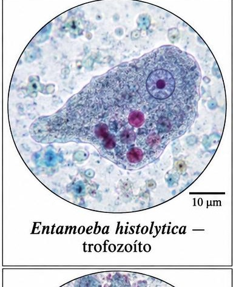
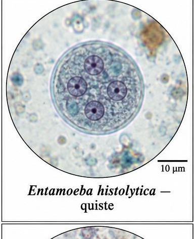
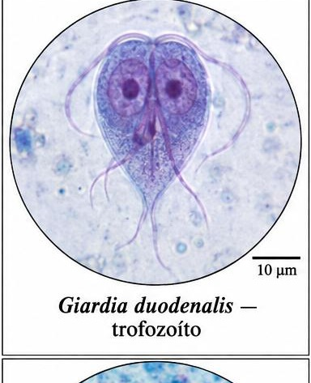
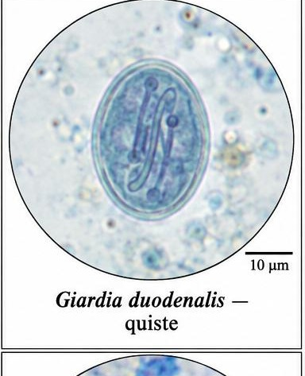
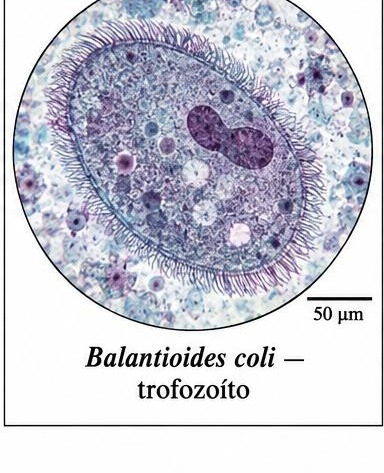
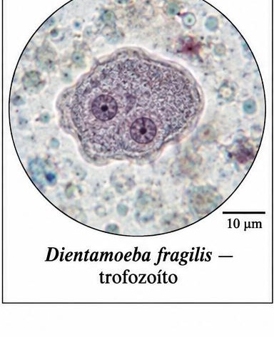
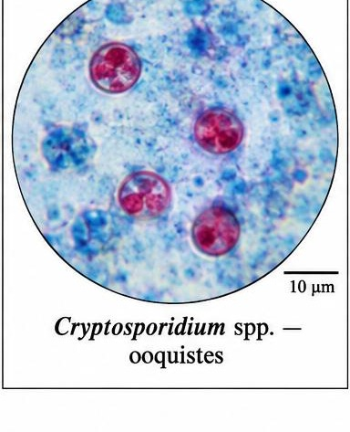
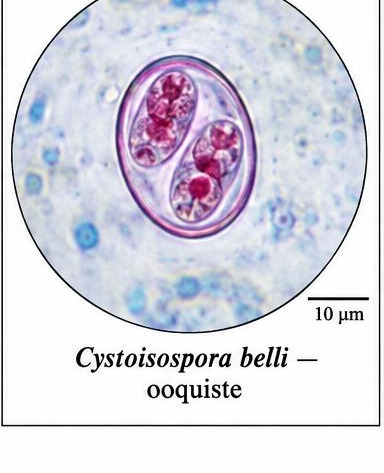
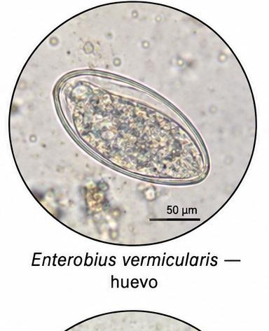
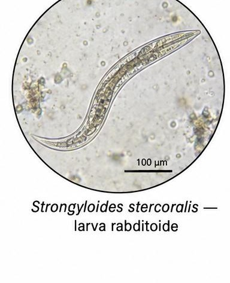
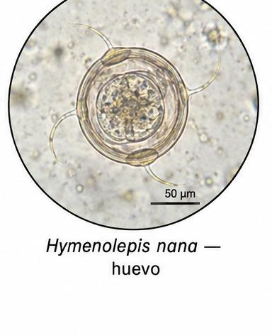
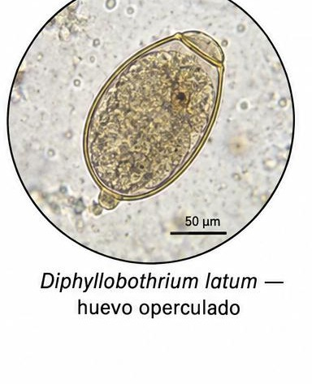
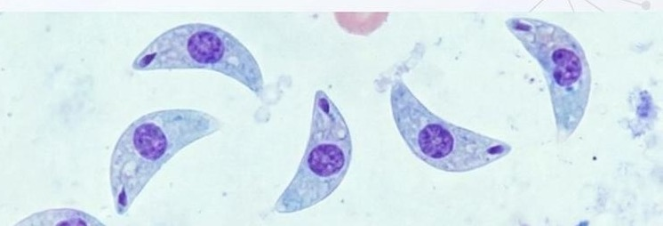
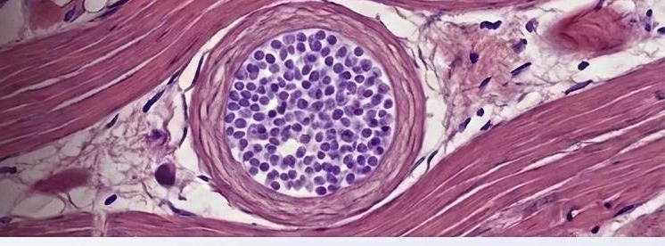
Vamos acompanhar um caso clínico aplicando os conceitos vistos nesse capítulo, em 3 níveis progressivos de profundidade.
A Clinicus selecionou este conteúdo para complementar seu estudo. Não substitui a leitura do resumo — o resumo ensina, o vídeo reforça.
Carregando recomendações...
O sistema guarda, no seu navegador, quais cards você já sabe bem e quais precisam voltar mais cedo — cada vez que você avalia um card, ele recalcula quando ele deve voltar.
10 questões, do mais básico ao mais puxado. Escolhe uma alternativa, depois clica em "Ver comentário completo" — vale a pena ler até quando você acerta, porque o comentário explica cada alternativa, não só a certa.